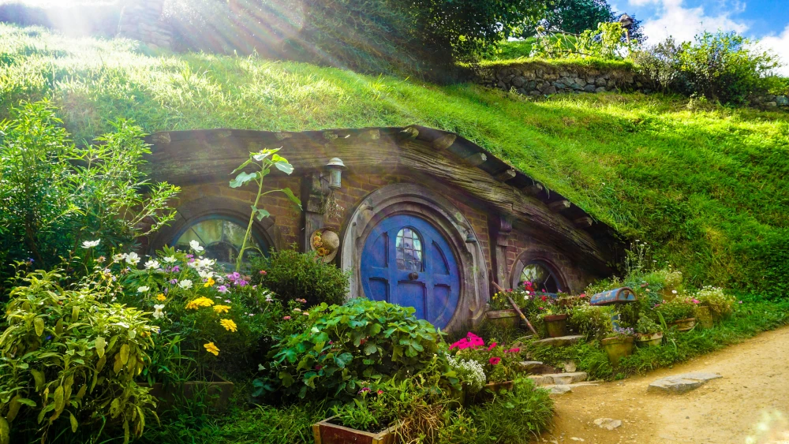

Vinlandet Nya Zeeland
2024-12-16
Nya Zeeland ses som ett vinland i den "Nya världen" inom vinbranschen. Kvaliten på vinerna är mycket bra och påminner om franska viner. Många Nya Zeeländare har varit i Frankrike för att lära sig om hur dom gör vin där. Här är klimatet ganska svalt och man satsar mestadels på vita viner, dom har till och med en egen variant av druvan Sauvignon Blanc. Inoom röda viner har man en del bra viner som är gjord på druvan Pinot Noir. Det finns mycket berg som man kan utnyttja som regn och vindskydd. På Nya Zeeland ligger de flesta vinproducenter i norra delen av Sydnön som heter Marlborough. Det kanske även är det mest kända området. Men det finns en hel del ndra områden som har bra viner, alltifrån Otago långt ner på Sydön till Auckland på Nordön. De flesta vingårdar ligger på den östra sidan av ön för att skyddas från kraftiga vindarna från havet.
På Nya Zeeland arbetar man mycket med hållbarhet och enligt uppgifter från Nya Zeeland är 98% av druvorna "sustainable". Man arbetar för biologisk mångfald och försöker få ner vatten och elförbrukning. Flertalet vingårdar har krav på att druvorna ska växa på ekologiskt certifierade marker, buteljeras på Nya Zeeland och avsmakas av en smakpanel. På Nya Zeeland har man arbetat hårt för skruvkorken också och många utav vinerna har just skruvkork. Själv är jag väldigt förtjust i speciellt vita viner från Nya Zeeland men när jag var där drack jag även en hel del goda, röda viner.
Nedan kommer några tips på viner att testa
- Stoneleigh Sauvignon Blanc, 2023 122:-det här har varit ett utav mina favoritviner länge! Smakar päron, lime, passionsfrukt. Nu finns det även som Riesling och Chardonnay!
- King's Bay Sauvignon Blanc, 2023, 135:-fruktig, ungdomlig smak med inslag av ananas, lime och päron.
- Te Kairanga, Pinot Noir, 2023, 189:-rött vin med smak av jordgubbar, skogshallon, lingon, choklad och nougat.
- Stoneleigh Rapaura, Pinot Noir, 2023, 189:-rött vin med fatkaraktär som har smak av ingefära, skogshallon, jordgubbar, choklad, körsbär och mynta.
God jul och Gott nytt år!